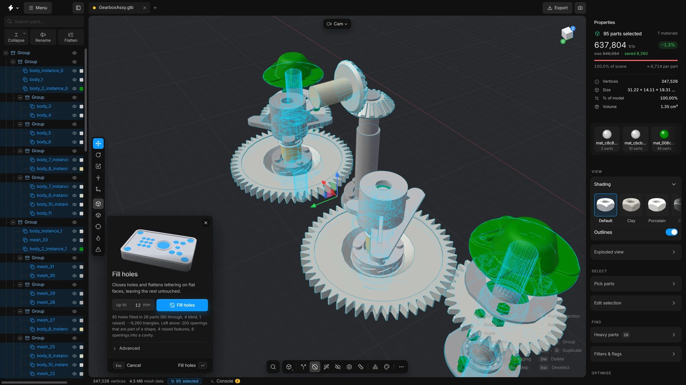

Remove holesv15
Close bolt holes, slots, pockets and lettering in flat faces. Each closed hole removes the triangles of its walls.
A plate with forty bolt holes carries forty small cylinders of triangles that nobody notices from a distance. Remove holes closes holes in flat faces and leaves the rest of each part exactly as it was. The part keeps its outline and loses the triangles inside the holes.
With the limit at 12 mm it closes bolt holes, slots and pockets up to that size, and leaves bosses and the bore of a washer or a nut alone.


What it closes, and what it leaves
- Closed: holes that go right through, holes with a floor, counterbores, slots, pockets and engraved lettering in flat faces.
- Countersinks and flared holes: the hole counts by its bore. The wide opening of a countersink may be up to five times the limit and is closed with the hole.
- An opening that leads into a hollow space: with Seal hollows on, as it is to begin with, it is closed flush with the face from outside. What lies behind it stays as it was, out of sight. With the switch off, it is left alone.
- Loose walls: a broken file can leave a cut-loose tube or cup floating where a hole was. With Leftover vertices on, it is taken out and the opening it sat in is closed. Only a piece that is small next to its part goes, never more than a third of the part.
- Left alone: a boss or a pin that stands up from a face.
- Left alone: an opening that is what the part is, such as the bore of a washer, a nut or a bushing.
- Left alone: an opening that leads out through a curved surface.
- Left alone: holes in curved surfaces. The tool works on flat faces only.
- Left alone: instanced parts, which the file stores as repeats of one shared shape. The result line says how many it passed over.
Steps
- Select the parts to work on. With nothing selected, it works on every visible part.
- Press P, or click Remove holes on the bottom toolbar. The panel opens at the bottom left of the viewport.
- Set Hole width up to to the largest hole you want closed, in millimetres, measured across the hole’s widest point. It starts at 12.
- Press Remove holes, or Enter.
- The holes close. The app reports how many, and the saving shows beside the triangle count.
What the advanced options mean
Open Advanced in the panel.
- Through holes
- Holes that go right through: an opening on both sides.
- Blind holes
- Holes and pockets with a floor: an opening on one side only.
- Open holes
- Openings with nothing behind them: a missing patch in a flat face.
- Seal hollows
- An opening that leads into a hollow space cannot be taken out whole. On: it is closed flush with the face from outside, and the wall of the hole under it is removed. What lies behind stays as it was, out of sight. Off: such an opening is left alone. It is on to begin with.
- Inner pieces
- A mesh can hold separate closed pieces inside its body, such as the balls of a valve or a pin in a bore. Once the holes are closed they are sealed in and never seen again, though still drawn. On: every piece that lies entirely inside the closed part is removed. It is on to begin with.
- Raised details
- Anything that stands proud of a flat face and is no higher than the limit is flattened into it: embossed lettering and logos at the default, and with a higher limit a boss, a dowel stub or a stamped collar. What stands higher stays.
- Up to
- A raised detail is flattened only if it stands no higher than this above its face. Embossed type is usually 0.1 to 0.5 mm high; a boss or a stamped collar a few mm. Set it just above what you want gone, or ribs and pins go too.
- Keep openings that shape the part
- On: an opening that takes up much of its face and of the part is kept, such as the bore of a washer or a window in a frame. Off: only the size limit decides.
- Smallest hole
- Holes narrower than this are left alone.
- Leftover vertices
- On: the points that ringed each hole are taken out of the flat face, and the face is triangulated again with the fewest triangles. Press Remove holes a second time to clean the same way what an earlier run, or an earlier tool, left behind, even when no hole is left to close. It also works on parts that are already in n-gons. Loose walls that a broken file left floating in an opening, a cut-loose tube or cup that belongs to no solid, go with it.
- Depth limit
- How far the inside of a hole may reach, as a multiple of the size limit. Lower it to leave deep bores alone.
- Flatness
- How far apart the directions of two triangles may be and still count as one flat face. Raise it for meshes whose flat faces are slightly bent.
- Surface may move
- After a hole is closed, a vertex of the flat face round it may be a little off the plane of that face, as on a gently curved panel. It may still be removed if the surface moves no more than this, and never more than 1% of the part’s size. It starts at 0.5 mm. With 0, only vertices exactly in the plane go.
- Reset to defaults
- Puts every option back.
Undo
A whole run is one undo step. Press CtrlZ and every hole is back.
Tips
- Start with a small limit, look at the result, and raise it. A limit that is too high closes openings you wanted, such as a cable cut-out.
- The filled result is what gets saved and exported.
- A hole that was formed by pushing through the sheet, with a collar on the other side, is closed, and its collar stays as a small stub.
- Points of a closed hole still show in the Lines view? Press Remove holes again: with Leftover vertices on, it removes them.
- A hole whose wall is wound the wrong way round, or whose edge is doubled, is found and closed too, instead of being closed twice.
- Two holes that touch at a corner, or a hole that touches the edge of its face, are closed as well.
- While it runs, Remove holes shows in the Tasks list of the status bar.
- Small loose pieces left next to a part are a job for Remove floating pieces. To turn the closed faces into clean polygons, or back into triangles, see Remesh.
Smart optimise can run this command as one of its steps, with the settings and the size limit of this panel.